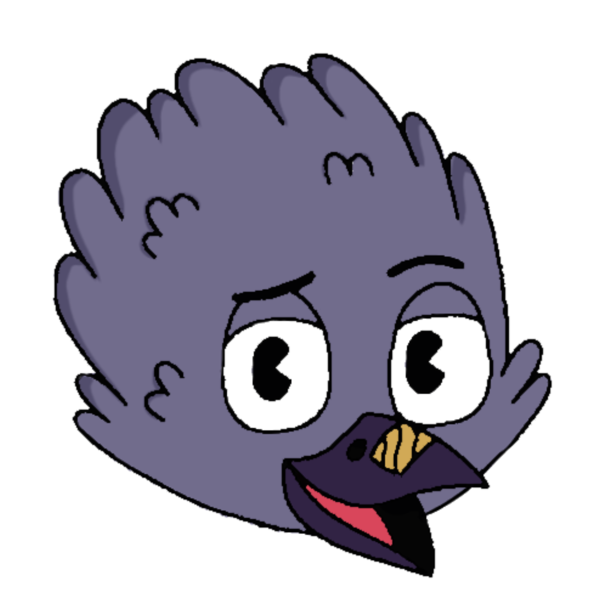
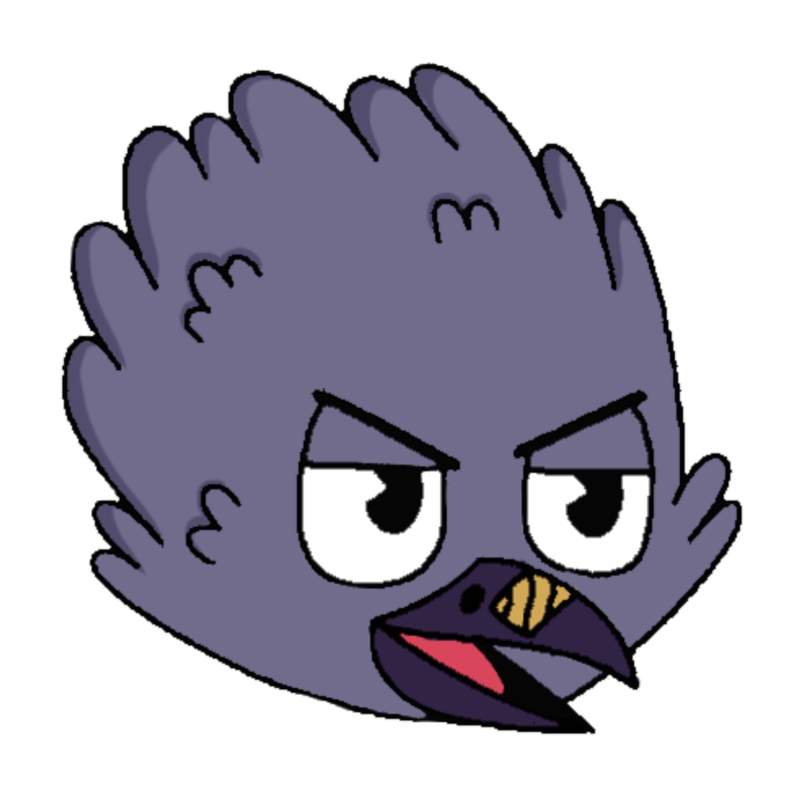
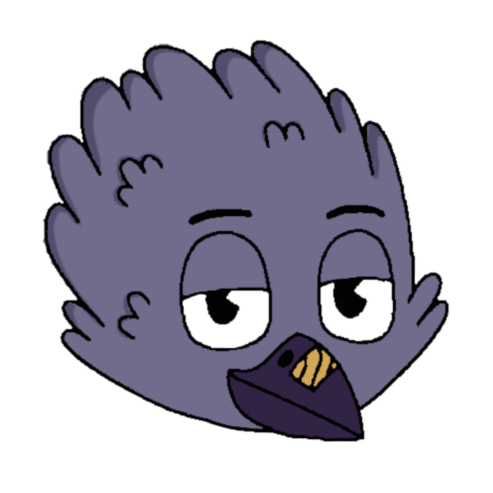
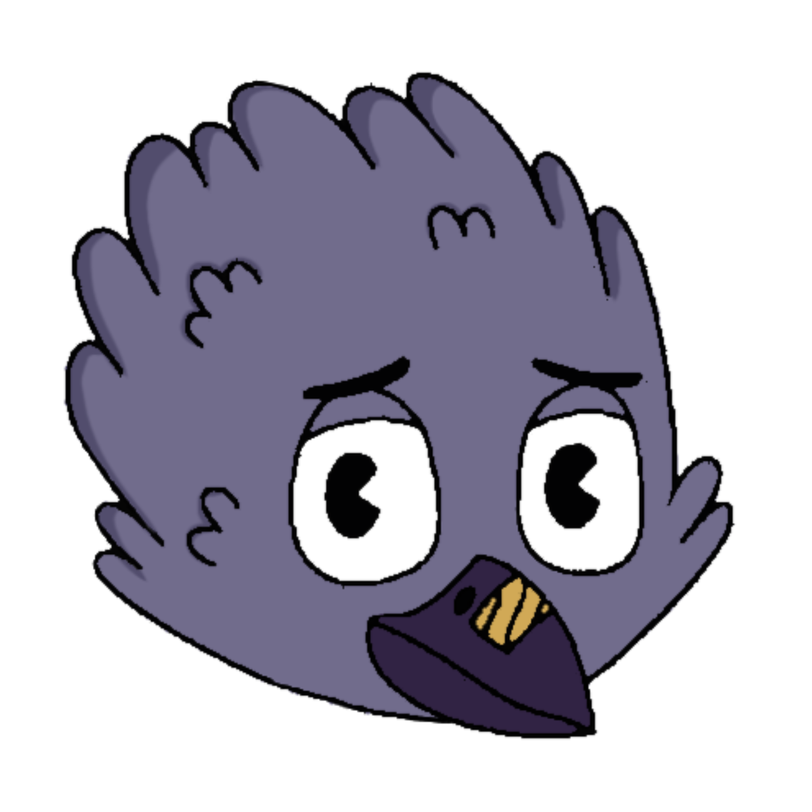
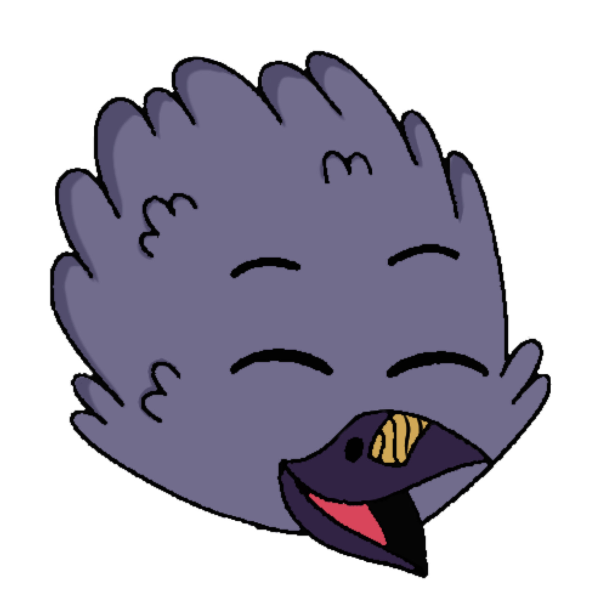
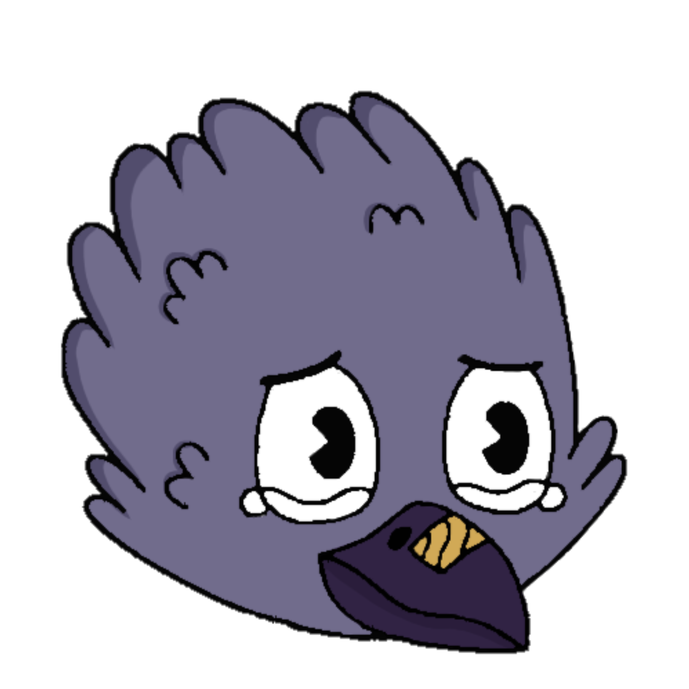
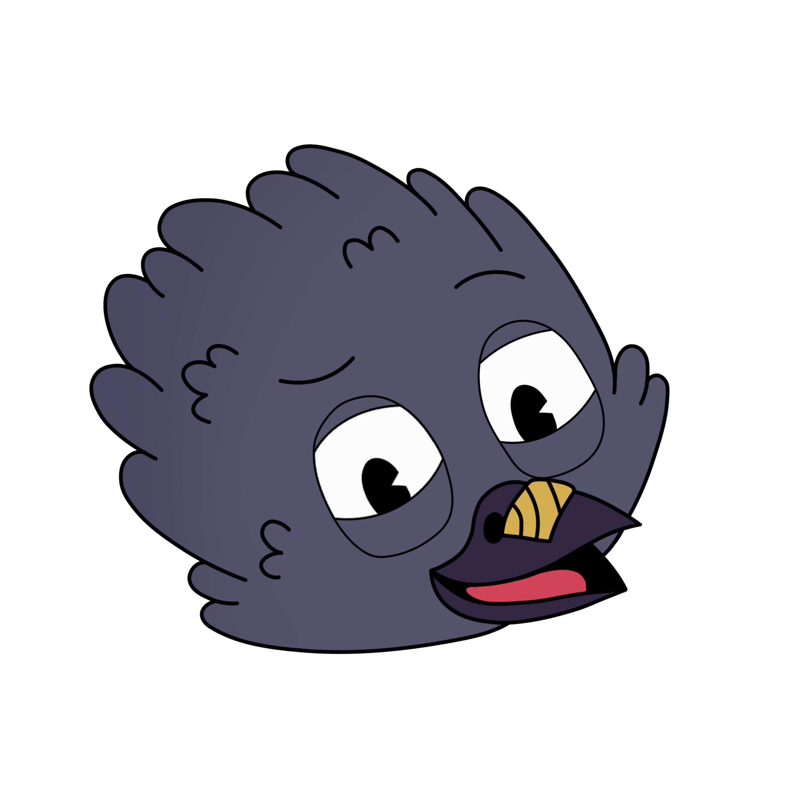

Friezy Face Features


Friezy stickers


Friezy body



غراب صغير ذكي يتمتع بذكاءٍ حاد ودهاءٍ لا يُخطئه أحد، معروفٌ لدى الجميع بصداقته الوفية مع "دارسي" صديقه المُقربة، و"بيردي" صديقته المُقربة. يُحب الأشياء المجانية التي يجدها في الحديقة، ولا يعتبر ذلك سرقةً بل "استعارةً مؤقتة"! يتردد صدى ضحكته في أرجاء الحي ليلاً، مُوقظاً الجيران ومُثيراً الجدل و الإزعاج، لكنه مع ذلك محبوب. و هو أيضًا صديقٌ مُقربٌ لذئب القرية الشهير "فولكي"، ومعروفٌ بحضوره الدائم أينما وُجدت المغامرة.
A small smart crow with brilliant inteligence and unmistakeable cunning , He’s known to all for his loyal companionship with ‘’Darcy’’ , His best friend , And ‘’Berdie’’ his close friend , He loves the free things that he found in the garden - it’s not considered as theft but ruther ‘Temporary borrowing’!. His laugh echoes through the neighborhood at night , Waking the neighbors and stirring up controversy , But he is beloved nonetheless. He is also a close friend of the famous village wolf ‘’Volkie’’ and known for his constant presence wherever is adventure.





